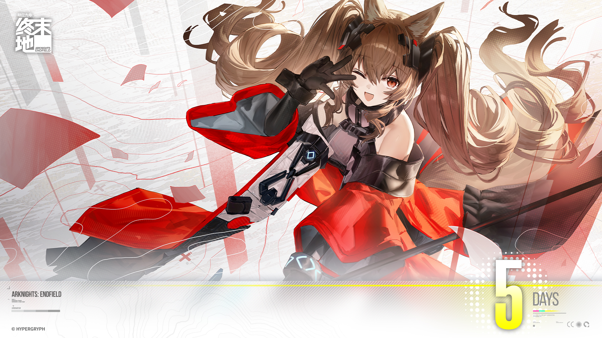

2025-02
个人主页生成部署工具
基于静态站点生成（SSG）技术的个人主页解决方案，采用内容-模板-生成分离架构，支持通过JSON和Markdown自定义内容，使用Docker容器化部署，实现一键生成和部署个人主页。
展示个人技术作品和项目实践
基于静态站点生成（SSG）技术的个人主页解决方案，采用内容-模板-生成分离架构，支持通过JSON和Markdown自定义内容，使用Docker容器化部署，实现一键生成和部署个人主页。

基于ARIMA、Prophet、LSTM、XGBoost多模型集成学习的销售预测项目，使用线性回归作为元学习器，显著提升预测精度。获钉钉杯数模比赛三等奖。
使用BERT预训练模型进行文本语义相似度判断，实现句子对二分类任务。基于Hugging Face生态完成从数据预处理到模型评估的全流程，训练集损失低至0.0925，验证集表现优异。